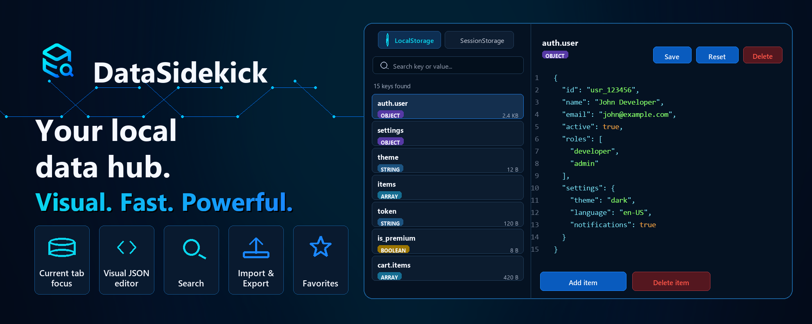
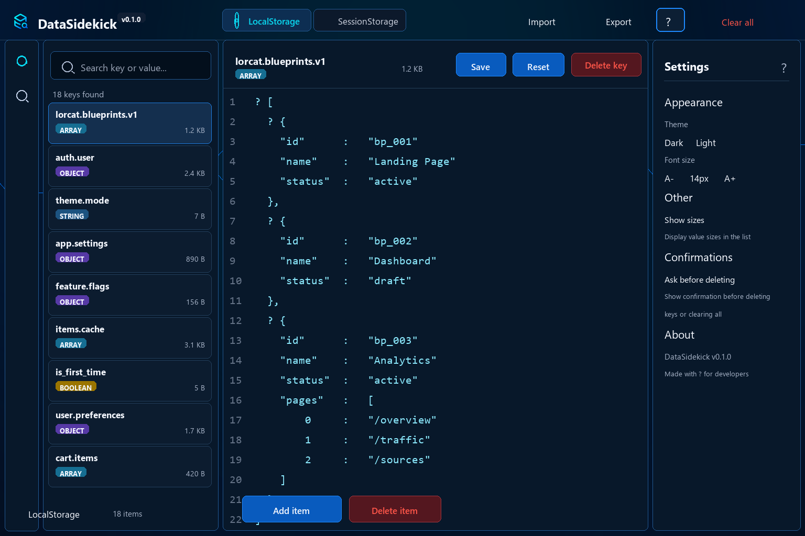

⌘
Smart search
Find keys and values quickly, including within nested JSON.
View, search, edit, import and export LocalStorage and SessionStorage data with focus on the current tab and a visual JSON editor. See use cases.

DataSidekick exists to help developers inspect and edit browser local data quickly, visually, and securely — directly from the Chrome side panel.
This page can create complex examples in localStorage and sessionStorage so you can open the side panel and explore the extension on a safe origin.
Open the console or use the buttons to prepare this origin.
DataSidekick demo
1. Click "Create demo data".
2. Open the DataSidekick side panel.
3. Compare LocalStorage and SessionStorage.
4. Edit JSON, export, import and clear keys.
prefix: datasidekick.demo.Built for when you need to edit storage without sacrificing readability, accuracy, and security.
Find keys and values quickly, including within nested JSON.
Valid JSON is no longer displayed as a compact string. It becomes an editable visual tree.
Shows data from the current origin to avoid mixing with other apps.
Save backups as JSON or restore local data with a few clicks.
Mark important keys, hide noise, and stay focused on what matters.
Dark mode by default, optional light mode, and adjustable font size.
DataSidekick helps when your app state lives in the browser and you need to understand, tweak, or share that state quickly.
Open nested objects in a visual tree, change specific fields, and save without rewriting compact strings manually.
View drafts, temporary flows, filters, and session states of the current tab without mixing data from other origins.
Generate backups, share test scenarios, and restore known states during development, QA, or support.
Tweak flags, themes, preferences, and local caches to validate behavior without clearing the entire browser.
The side panel lets you edit data without leaving the page. The key list, type badges, quick actions, and visual editor reduce clicks and errors.

The extension does not sell, transmit, or share user data. Storage access happens locally for display and editing as requested by the user.
HTML, CSS, and JavaScript are bundled inside the extension. DataSidekick does not load remotely hosted scripts.
Permissions are used to open the side panel, detect the active tab, and execute local code in the current page context.
DataSidekick does not request permanent access to all sites during installation.
When you open the panel on a page, the extension
identifies the current origin, for example
localhost:3000 or
app.example.com. To read and edit
localStorage and
sessionStorage, DataSidekick
requests permission only for that origin.
This access is used only to:
DataSidekick does not send your data to external servers, does not use remote code, and does not share data with third parties. Everything happens locally in the browser.
No. LocalStorage and SessionStorage data is read and edited locally in the browser. The extension does not send this data to external servers. Learn more about privacy.
Not during installation. When you open the panel on a page, DataSidekick requests permission only for the current origin. Details about permissions.
Yes. Valid JSON values are displayed as an editable visual tree for easy point edits. Try it out.
For developers, QAs, and technical people who need to debug, edit, import, or export local data from web applications. See all features.
Developer and creator of DataSidekick — a Chrome extension made to make local data editing more visual, fast, and reliable.